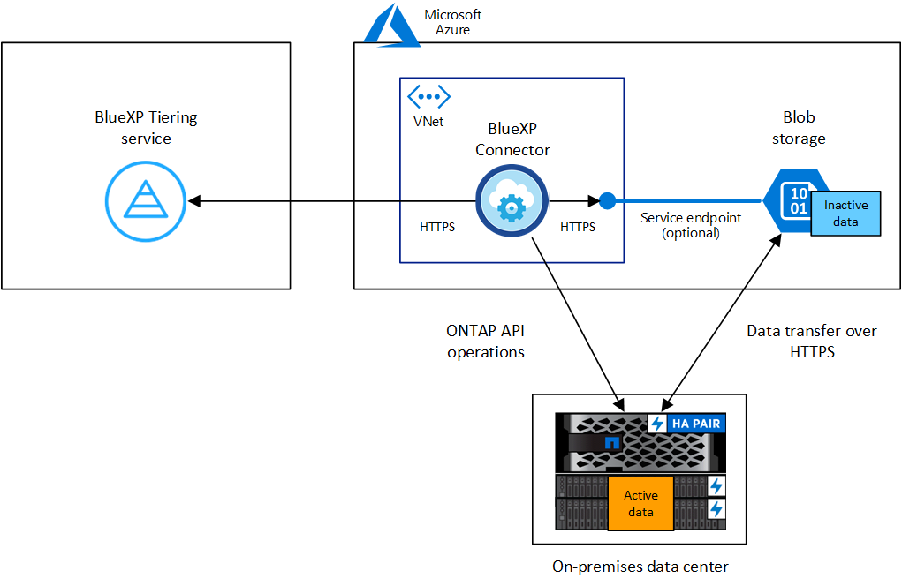

Inizia subito
Inizia subito
Tiering dei dati dai cluster ONTAP on-premise allo storage Azure Blob
 Suggerisci modifiche
Suggerisci modifiche
Liberare spazio sui cluster ONTAP on-premise eseguendo il tiering dei dati inattivi sullo storage Azure Blob.
Avvio rapido
Inizia subito seguendo questi passaggi o scorri verso il basso fino alle sezioni rimanenti per ottenere dettagli completi.
 Preparatevi a eseguire il tiering dei dati sullo storage Azure Blob
Preparatevi a eseguire il tiering dei dati sullo storage Azure BlobSono necessari i seguenti elementi:
-
Cluster ONTAP on-premise con ONTAP 9.4 o versione successiva e connessione HTTPS allo storage Azure Blob. "Scopri come individuare un cluster".
-
Un connettore installato in Azure VNET o on-premise.
-
Rete per un connettore che abilita una connessione HTTPS in uscita al cluster ONTAP nel data center, allo storage Azure e al servizio di tiering BlueXP.
 Impostare il tiering
Impostare il tieringIn BlueXP, selezionare un ambiente di lavoro ONTAP on-premise, fare clic su Enable (attiva) per il servizio Tiering e seguire le istruzioni per eseguire il tiering dei dati sullo storage Azure Blob.
 Impostare la licenza
Impostare la licenzaAl termine della prova gratuita, è possibile pagare il tiering BlueXP tramite un abbonamento pay-as-you-go, una licenza BYOL per tiering ONTAP BlueXP o una combinazione di entrambi:
-
Per iscriversi a Azure Marketplace, "Vai all'offerta BlueXP Marketplace", Fare clic su Subscribe, quindi seguire le istruzioni.
-
Per pagare utilizzando una licenza BlueXP Tiering BYOL, contattaci se devi acquistarne una, quindi "Aggiungilo al tuo account dal portafoglio digitale BlueXP".
Requisiti
Verificare il supporto per il cluster ONTAP, configurare la rete e preparare lo storage a oggetti.
L'immagine seguente mostra ciascun componente e le connessioni che è necessario preparare tra di essi:


|
La comunicazione tra il connettore e lo storage BLOB è solo per la configurazione dello storage a oggetti. Il connettore può risiedere in sede, invece che nel cloud. |
Preparazione dei cluster ONTAP
I cluster ONTAP devono soddisfare i seguenti requisiti quando si esegue il tiering dei dati sullo storage Azure Blob.
- Piattaforme ONTAP supportate
-
-
Quando si utilizza ONTAP 9.8 e versioni successive: È possibile tierare i dati dai sistemi AFF o FAS con aggregati all-SSD o aggregati all-HDD.
-
Quando si utilizza ONTAP 9.7 e versioni precedenti: È possibile eseguire il tiering dei dati dai sistemi AFF o dai sistemi FAS con aggregati all-SSD.
-
- Versione di ONTAP supportata
-
ONTAP 9.4 o versione successiva
- Requisiti di rete del cluster
-
-
Il cluster ONTAP avvia una connessione HTTPS sulla porta 443 allo storage Azure Blob.
ONTAP legge e scrive i dati da e verso lo storage a oggetti. Lo storage a oggetti non viene mai avviato, ma risponde.
Sebbene ExpressRoute offra performance migliori e costi di trasferimento dei dati inferiori, non è necessario tra il cluster ONTAP e lo storage Azure Blob. Tuttavia, questa è la Best practice consigliata.
-
È necessaria una connessione in entrata dal connettore, che può risiedere in un Azure VNET o on-premise.
Non è richiesta una connessione tra il cluster e il servizio di tiering BlueXP.
-
Per ogni nodo ONTAP che ospita i volumi da tierare è necessario un LIF intercluster. La LIF deve essere associata a IPSpace che ONTAP deve utilizzare per connettersi allo storage a oggetti.
Quando si imposta il tiering dei dati, il tiering BlueXP richiede l'utilizzo di IPSpace. È necessario scegliere l'IPSpace a cui ciascun LIF è associato. Potrebbe trattarsi dell'IPSpace "predefinito" o di un IPSpace personalizzato creato. Scopri di più "LIF" e. "IPspaces".
-
- Volumi e aggregati supportati
-
Il numero totale di volumi a cui è possibile eseguire il tiering BlueXP potrebbe essere inferiore al numero di volumi nel sistema ONTAP. Questo perché i volumi non possono essere suddivisi in livelli da alcuni aggregati. Consultare la documentazione ONTAP per "Funzionalità o funzionalità non supportate da FabricPool".
|
|
BlueXP Tiering supporta i volumi FlexGroup, a partire da ONTAP 9.5. Il programma di installazione funziona come qualsiasi altro volume. |
Rilevamento di un cluster ONTAP
È necessario creare un ambiente di lavoro ONTAP on-premise in BlueXP prima di iniziare a tierare i dati cold.
Creazione o commutazione di connettori
Per eseguire il Tier dei dati nel cloud è necessario un connettore. Quando si esegue il tiering dei dati nello storage Azure Blob, è possibile utilizzare un connettore che si trova in un Azure VNET o nelle proprie sedi. Sarà necessario creare un nuovo connettore o assicurarsi che il connettore attualmente selezionato risieda in Azure o on-premise.
Verificare di disporre delle autorizzazioni necessarie per il connettore
Se il connettore è stato creato utilizzando BlueXP versione 3.9.25 o successiva, l'impostazione è completa. Il ruolo personalizzato che fornisce le autorizzazioni necessarie a un connettore per gestire le risorse e i processi all'interno della rete Azure verrà impostato per impostazione predefinita. Vedere "autorizzazioni di ruolo personalizzate richieste" e a. "Autorizzazioni specifiche richieste per il tiering BlueXP".
Se il connettore è stato creato utilizzando una versione precedente di BlueXP, sarà necessario modificare l'elenco delle autorizzazioni per l'account Azure per aggiungere eventuali autorizzazioni mancanti.
Preparazione del collegamento in rete per il connettore
Assicurarsi che il connettore disponga delle connessioni di rete richieste. Un connettore può essere installato on-premise o in Azure.
-
Assicurarsi che la rete in cui è installato il connettore abiliti le seguenti connessioni:
-
Una connessione HTTPS tramite la porta 443 al servizio di tiering BlueXP e allo storage a oggetti Azure Blob ("vedere l'elenco degli endpoint")
-
Una connessione HTTPS sulla porta 443 alla LIF di gestione del cluster ONTAP
-
-
Se necessario, abilitare un endpoint del servizio VNET allo storage Azure.
Si consiglia di utilizzare un endpoint del servizio VNET per lo storage Azure se si dispone di una connessione ExpressRoute o VPN dal cluster ONTAP a VNET e si desidera che la comunicazione tra il connettore e lo storage Blob rimanga nella rete privata virtuale.
Preparazione dello storage Azure Blob
Quando si imposta il tiering, è necessario identificare il gruppo di risorse che si desidera utilizzare, l'account di storage e il container Azure che appartengono al gruppo di risorse. Un account storage consente a BlueXP Tiering di autenticare e accedere al container Blob utilizzato per il tiering dei dati.
BlueXP Tiering supporta il tiering per qualsiasi account storage in qualsiasi regione accessibile tramite il connettore.
BlueXP Tiering supporta solo i tipi di account storage General Purpose v2 e Premium Block Blob.
|
|
Se stai pensando di configurare il tiering BlueXP per utilizzare un Tier di accesso a costi inferiori a cui passeranno i dati in Tier dopo un determinato numero di giorni, non devi selezionare alcuna regola per il ciclo di vita durante la configurazione del container nell'account Azure. Il tiering di BlueXP gestisce le transizioni del ciclo di vita. |
Tiering dei dati inattivi dal primo cluster allo storage Azure Blob
Dopo aver preparato l'ambiente Azure, inizia a tiering dei dati inattivi dal primo cluster.
-
Selezionare l'ambiente di lavoro on-premise ONTAP.
-
Fare clic su Enable (attiva) per il servizio Tiering dal pannello di destra.
Se la destinazione del tiering di Azure Blob esiste come ambiente di lavoro in Canvas, è possibile trascinare il cluster nell'ambiente di lavoro di Azure Blob per avviare l'installazione guidata.

-
Define Object Storage Name: Immettere un nome per lo storage a oggetti. Deve essere univoco rispetto a qualsiasi altro storage a oggetti utilizzato con gli aggregati di questo cluster.
-
Seleziona provider: Selezionare Microsoft Azure e fare clic su continua.
-
Completare la procedura riportata nelle pagine Create Object Storage:
-
Resource Group (Gruppo di risorse): Selezionare un gruppo di risorse in cui viene gestito un container esistente o in cui si desidera creare un nuovo container per i dati a più livelli e fare clic su Continue (continua).
Quando si utilizza un connettore on-premise, è necessario inserire l'abbonamento Azure che fornisce l'accesso al gruppo di risorse.
-
Azure Container: Selezionare il pulsante di opzione per aggiungere un nuovo contenitore Blob a un account di storage o per utilizzare un container esistente. Quindi, selezionare l'account di storage e scegliere il container esistente oppure immettere il nome del nuovo container. Quindi fare clic su continua.
Gli account e i contenitori di storage visualizzati in questa fase appartengono al gruppo di risorse selezionato nella fase precedente.
-
Ciclo di vita dei livelli di accesso: Il tiering BlueXP gestisce le transizioni del ciclo di vita dei dati a più livelli. I dati iniziano nella classe Hot, ma è possibile creare una regola per applicare la classe Cool ai dati dopo un certo numero di giorni.
Selezionare il livello di accesso a cui si desidera trasferire i dati suddivisi in livelli e il numero di giorni prima dell'assegnazione dei dati a tale livello, quindi fare clic su continua. Ad esempio, la schermata riportata di seguito mostra che i dati a livelli vengono assegnati alla classe Cool dalla classe Hot dopo 45 giorni di archiviazione degli oggetti.
Se si sceglie Mantieni i dati in questo Tier di accesso, i dati rimangono nel Tier di accesso Hot e non vengono applicate regole. "Vedere livelli di accesso supportati".

Si noti che la regola del ciclo di vita viene applicata a tutti i contenitori BLOB nell'account di archiviazione selezionato.
-
Rete cluster: Selezionare l'IPSpace che ONTAP deve utilizzare per connettersi allo storage a oggetti e fare clic su continua.
La selezione dell'IPSpace corretto garantisce che il tiering BlueXP possa configurare una connessione da ONTAP allo storage a oggetti del provider di cloud.
È inoltre possibile impostare la larghezza di banda della rete disponibile per caricare i dati inattivi nello storage a oggetti definendo la "velocità di trasferimento massima". Selezionare il pulsante di opzione limitato e immettere la larghezza di banda massima utilizzabile oppure selezionare illimitato per indicare che non esiste alcun limite.
-
-
Nella pagina Tier Volumes, selezionare i volumi per i quali si desidera configurare il tiering e avviare la pagina Tiering Policy:
-
Per selezionare tutti i volumi, selezionare la casella nella riga del titolo (
 ) E fare clic su Configure Volumes (Configura volumi).
) E fare clic su Configure Volumes (Configura volumi). -
Per selezionare più volumi, selezionare la casella relativa a ciascun volume (
 ) E fare clic su Configure Volumes (Configura volumi).
) E fare clic su Configure Volumes (Configura volumi). -
Per selezionare un singolo volume, fare clic sulla riga (o.
 ) per il volume.
) per il volume.
-
-
Nella finestra di dialogo Tiering Policy, selezionare una policy di tiering, regolare i giorni di raffreddamento per i volumi selezionati e fare clic su Apply (Applica).

Hai configurato correttamente il tiering dei dati dai volumi del cluster allo storage a oggetti Azure Blob.
"Assicurarsi di sottoscrivere il servizio di tiering BlueXP".
È possibile rivedere le informazioni relative ai dati attivi e inattivi sul cluster. "Scopri di più sulla gestione delle impostazioni di tiering".
È inoltre possibile creare storage a oggetti aggiuntivo nei casi in cui si desidera eseguire il Tier dei dati da determinati aggregati di un cluster a diversi archivi di oggetti. Oppure, se si prevede di utilizzare il mirroring FabricPool, dove i dati a più livelli vengono replicati in un archivio di oggetti aggiuntivo. "Scopri di più sulla gestione degli archivi di oggetti".